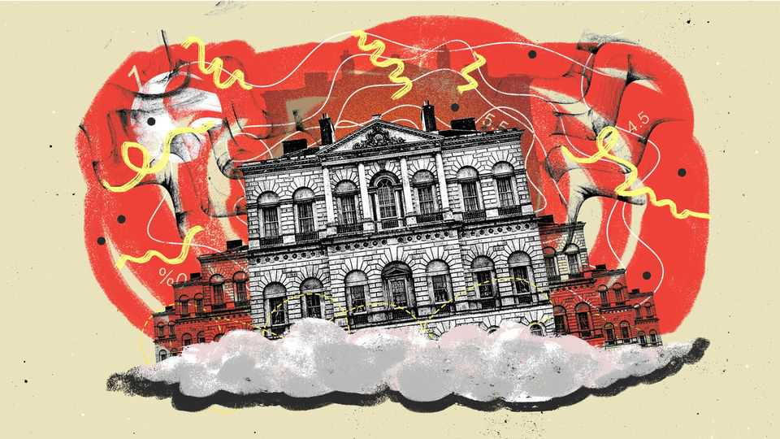
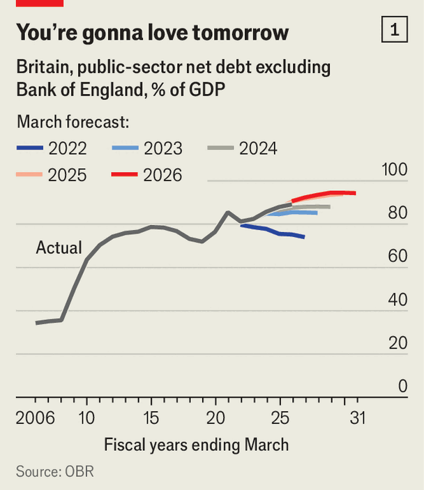
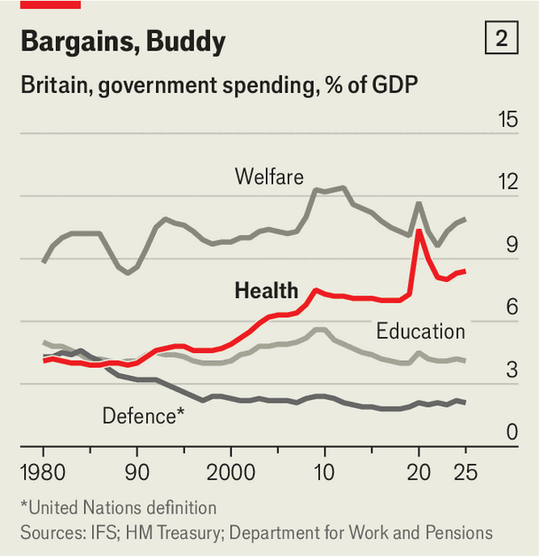
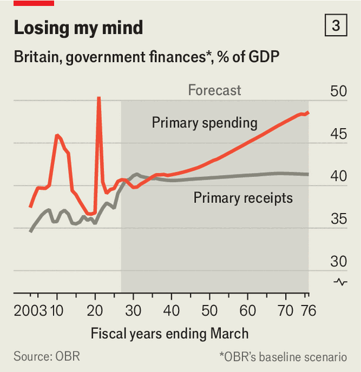
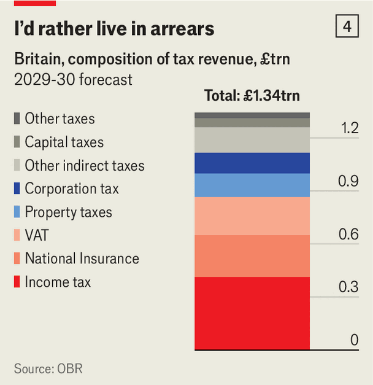

Britain’s welfare state is living on borrowed time
But John Healey’s budget will feed the delusion that it is not

Oct 22nd 2026
One of the great fantasies of British politics is that the country can sustain a welfare state similar to today’s without raising taxes. It looks as if John Healey will be the latest chancellor to peddle this fiction, at his budget on October 28th. Taxes account for 32% of the cost to employ an average single Briton, three percentage points less than the rich-world average. Yet in return citizens expect a full-service welfare state, including free health care and universal pensions. Successive governments this century have funded this jammy deal only by taxing high earners hard, skimping on defence, letting public services deteriorate—and borrowing a fortune.
This strategy is running out of road. Poor growth and an ageing population, combined with increasing geopolitical turmoil, are stretching the public finances far too close to breaking point. Failure to reckon with these realities has given Britain’s past few budgets an air of perpetual crisis, with one chancellor after another scrambling to make up perennial shortfalls. Mr Healey’s budget is shaping up to be a classic of the genre, fiddling with small tax rises when in fact the whole system is flawed. Difficult decisions seem set to be postponed until a spending review next year.
The backdrop is bleak. Britain’s ten-year borrowing cost has risen to 5.4%, from 4.4% at the latest forecast by the Office for Budget Responsibility (OBR) in March. That is partly because the Iran war has raised energy prices, but many other factors—from outsize government borrowing to surging global demand for capital—mean bond yields are unlikely to fall soon. The Resolution Foundation, a think-tank, reckons the government will need to spend £14bn ($19bn, or 0.4% of GDP) more on debt interest in the fiscal year to 2030 than previously assumed.
Mr Healey has signed up to fiscal rules ensuring day-to-day spending is fully covered by taxes in three years’ time, with debt also falling as a percentage of GDP by then. In March he was forecast to follow these rules with £24bn to spare, but the Resolution Foundation reckons only £12bn remains. (Other forecasts are sunnier.)
The chancellor has also said his budget will maintain a financial “buffer against uncertainty” and give people a “bit of breathing space”. This suggests he will dispense help with the cost of living, through targeted subsidies for energy bills, for instance, or by postponing a planned rise in fuel duty. Depending on his exact choices, expect taxes to rise modestly by 2030, probably via small-ish measures such as higher levies on banks or gamblers.
A low-drama budget would be no disaster. If Mr Healey stuck to plans made by his predecessor, Rachel Reeves, in March, the deficit would fall from 4.4% of GDP in the past fiscal year to 1.8% by 2030. France, in contrast, is on track to run a deficit of 5.4% of GDP in 2026, having aimed for 5%.

But Britain should try to do more than beat the French, and abiding by the letter of the fiscal rules does not mean its public finances are in good repair. The rules themselves are eyebrow-raisingly loose, never requiring deficits or debts to actually fall. They need only be forecast to fall in three to five years—so the Treasury can always dodge hard choices by promising restraint that then fails to arrive (see chart 1). This looks likely to happen again: plans rely on real-terms cuts to many departments’ budgets that few expect to happen.
And so Britain’s debt is like a ratchet, jumping up at every crisis and never coming back down by much. Debt, excluding the Bank of England’s balance sheet, is now 92% of GDP, up from 76% before the covid-19 pandemic and 36% before the financial crisis of 2007-09. Higher bond yields have made servicing this debt painful. The government’s annual interest bill has more than doubled since the pandemic, to £109bn. That is 8% of government spending, more than the entire defence budget. When crisis next strikes, therefore, Britain may struggle to borrow its way out.
The country’s failure to pay off its debts stems from a mismatch between the state Britons want and the taxes they are willing to pay. Government spending will constitute 45% of GDP in the fiscal year to 2027, up from 39% before covid. The Institute for Fiscal Studies (IFS), a think-tank, points out that the last time public spending was sustained at such a high level was during the second world war.

The biggest culprit is the National Health Service. The state forks out 8.4% of GDP on health care, up from 4.9% in 2000 (see chart 2). As the population ages, and as the sector’s productivity lags behind the wider economy’s, this share will climb. The OBR reckons that health-care spending could reach 13% of GDP by the 2070s.
A growing cohort of geriatrics also needs food, accommodation and social care. In July the OBR thought spending on the state pension alone could rise from 5% of GDP by 2031 to 9% by the 2070s. Andy Burnham, the prime minister, has since said he will tweak the “triple lock”, which raises the state pension each year, to make it slightly less generous after 2030. But any savings will be swallowed by his plans for a new National Care Service.

Britain used to pay for its welfare state by spending less on defence. Threats from Russia and China mean that is no longer an option. The government has pledged to spend 3.5% of GDP on defence by 2035, up from 2.7% in the fiscal year to 2028. In total, the OBR thinks that government spending excluding interest payments could rise from 40% of GDP in 2030 to 49% by the 2070s. If revenues stayed constant, Britain’s debt would balloon (see chart 3).
Should an imminent debt crisis loom, the government would take action. But the incentive to move early is weak because no one knows when this might happen. A growth spurt, perhaps fuelled by artificial intelligence, may postpone the reckoning (though it would probably also raise borrowing costs). The ageing of Britain’s population nevertheless means a reckoning is coming. When it does, one option would be drastic cuts to spending: reducing the state pension, say, or tightening eligibility for disability benefits. A brave government might even start charging patients to book a doctor’s appointment.

The alternative is rethinking the tax system. Since coming to power in 2024 Labour has been constrained by its foolish manifesto pledge not to increase income tax, national insurance, value-added tax (VAT) or corporation tax. These account for over 70% of tax revenue. Labour has already broken its promise, notably by raising the national insurance paid by employers. The total tax take is forecast to be 38% of GDP by 2030, the highest since the 1940s.
Mr Healey will be loth to break Labour’s manifesto pledge again. But if his party does not want to cut long-term spending it will have to reconsider how the government raises revenue. Some cash could come from higher taxes on the rich. The chancellor could, say, rejig capital-gains tax to skim more from unusually high investment returns. For now, however, he has reportedly rejected calls from some Labour MPs to raise capital-gains tax.
In any case, higher levies on wealth would not fund the sort of welfare state Britons have become accustomed to. For that, politicians and voters would have to accept that broad swathes of society need to start contributing more. This could involve ditching the list of products, such as many clothing and food products, which are exempt from VAT. Altogether, these exemptions cost the state £70bn a year. Or the government could raise the level of income tax paid by low and middle earners.
None of these options is politically appealing. But Britain’s fiscal reckoning might come sooner rather than later. Next year’s spending review will set departmental budgets for at least the following three. Earlier this year, when Mr Healey was defence secretary, he said it was crucial for defence spending to rise to 3% of GDP by 2030. He then resigned when the Treasury refused. The IFS reckons that meeting this target, while raising health-care spending and avoiding other real-terms cuts, would cost an extra £35bn a year by 2030.
To grasp the scale of this cost, consider that funding it would be equivalent to raising the basic rate of income tax from 20% to about 24%. If—as looks likely—Mr Healey instead fiddles at the edges on October 28th, he may get away with it for a while. Eventually, though, the bill will fall due. ■